数据导入以及处理¶
数据来自kaggle https://www.kaggle.com/henslersoftware/19560-indian-takeaway-orders
导入库¶
import pandas as pd
import numpy as np
import matplotlib.pyplot as plt
import seaborn as sns
sns.set(style="white")
sns.set(style="whitegrid", color_codes=True)
import warnings
warnings.simplefilter("ignore")
读取数据并作简单的了解¶
data = pd.read_csv("restaurant-1-orders.csv")
data
| Order Number | Order Date | Item Name | Quantity | Product Price | Total products | |
|---|---|---|---|---|---|---|
| 0 | 16118 | 03/08/2019 20:25 | Plain Papadum | 2 | 0.80 | 6 |
| 1 | 16118 | 03/08/2019 20:25 | King Prawn Balti | 1 | 12.95 | 6 |
| 2 | 16118 | 03/08/2019 20:25 | Garlic Naan | 1 | 2.95 | 6 |
| 3 | 16118 | 03/08/2019 20:25 | Mushroom Rice | 1 | 3.95 | 6 |
| 4 | 16118 | 03/08/2019 20:25 | Paneer Tikka Masala | 1 | 8.95 | 6 |
| ... | ... | ... | ... | ... | ... | ... |
| 74813 | 2518 | 18/05/2016 18:53 | House Red wine 75cl | 2 | 17.95 | 7 |
| 74814 | 2503 | 14/05/2016 19:28 | House Red wine 75cl | 2 | 17.95 | 6 |
| 74815 | 2467 | 10/05/2016 13:18 | House Red wine 75cl | 2 | 17.95 | 9 |
| 74816 | 2249 | 07/04/2016 19:04 | House white wine 75cl | 1 | 17.95 | 6 |
| 74817 | 1403 | 02/10/2015 17:29 | House Red wine 75cl | 1 | 17.95 | 9 |
74818 rows × 6 columns
data.shape
(74818, 6)
data.info()
<class 'pandas.core.frame.DataFrame'>
RangeIndex: 74818 entries, 0 to 74817
Data columns (total 6 columns):
# Column Non-Null Count Dtype
--- ------ -------------- -----
0 Order Number 74818 non-null int64
1 Order Date 74818 non-null object
2 Item Name 74818 non-null object
3 Quantity 74818 non-null int64
4 Product Price 74818 non-null float64
5 Total products 74818 non-null int64
dtypes: float64(1), int64(3), object(2)
memory usage: 3.4+ MB
data.describe()
| Order Number | Quantity | Product Price | Total products | |
|---|---|---|---|---|
| count | 74818.000000 | 74818.000000 | 74818.000000 | 74818.000000 |
| mean | 9115.638162 | 1.243564 | 5.286492 | 6.931434 |
| std | 4052.210452 | 0.798207 | 3.338221 | 3.954832 |
| min | 630.000000 | 1.000000 | 0.500000 | 1.000000 |
| 25% | 5590.000000 | 1.000000 | 2.950000 | 5.000000 |
| 50% | 9103.000000 | 1.000000 | 3.950000 | 6.000000 |
| 75% | 12630.000000 | 1.000000 | 8.950000 | 8.000000 |
| max | 16118.000000 | 51.000000 | 17.950000 | 60.000000 |
data.isnull().sum()
Order Number 0
Order Date 0
Item Name 0
Quantity 0
Product Price 0
Total products 0
dtype: int64
发现没有缺失值，说明kaggle上面的数据集质量还是不错的
数据处理¶
将日期转化为datetime64类型¶
data["Order Date"] = pd.to_datetime(data["Order Date"])
计算总价格¶
总价格为$ Product Price * Quantity $
data["Total Price"] = data["Product Price"] * data["Quantity"]
data
| Order Number | Order Date | Item Name | Quantity | Product Price | Total products | Total Price | |
|---|---|---|---|---|---|---|---|
| 0 | 16118 | 2019-03-08 20:25:00 | Plain Papadum | 2 | 0.80 | 6 | 1.60 |
| 1 | 16118 | 2019-03-08 20:25:00 | King Prawn Balti | 1 | 12.95 | 6 | 12.95 |
| 2 | 16118 | 2019-03-08 20:25:00 | Garlic Naan | 1 | 2.95 | 6 | 2.95 |
| 3 | 16118 | 2019-03-08 20:25:00 | Mushroom Rice | 1 | 3.95 | 6 | 3.95 |
| 4 | 16118 | 2019-03-08 20:25:00 | Paneer Tikka Masala | 1 | 8.95 | 6 | 8.95 |
| ... | ... | ... | ... | ... | ... | ... | ... |
| 74813 | 2518 | 2016-05-18 18:53:00 | House Red wine 75cl | 2 | 17.95 | 7 | 35.90 |
| 74814 | 2503 | 2016-05-14 19:28:00 | House Red wine 75cl | 2 | 17.95 | 6 | 35.90 |
| 74815 | 2467 | 2016-10-05 13:18:00 | House Red wine 75cl | 2 | 17.95 | 9 | 35.90 |
| 74816 | 2249 | 2016-07-04 19:04:00 | House white wine 75cl | 1 | 17.95 | 6 | 17.95 |
| 74817 | 1403 | 2015-02-10 17:29:00 | House Red wine 75cl | 1 | 17.95 | 9 | 17.95 |
74818 rows × 7 columns
选取需要分析的数据¶
grouper = pd.Grouper(key="Order Date", freq="Y")
data.groupby(grouper).sum().reset_index()
| Order Date | Order Number | Quantity | Product Price | Total products | Total Price | |
|---|---|---|---|---|---|---|
| 0 | 2015-12-31 | 85035 | 80 | 353.10 | 312 | 412.50 |
| 1 | 2016-12-31 | 34487972 | 13496 | 57205.25 | 78250 | 63978.80 |
| 2 | 2017-12-31 | 126190039 | 26112 | 110157.85 | 142369 | 126484.50 |
| 3 | 2018-12-31 | 263228568 | 31239 | 134138.45 | 180308 | 150094.70 |
| 4 | 2019-12-31 | 258022202 | 22114 | 93670.10 | 117357 | 105546.95 |
观察发现2015年的数据并不完整，因此去除不作为分析的对象。
data = data[data["Order Date"].dt.year != 2015]
合并订单¶
由于相同的订单并不在同一行，因此需要合并这些订单，并计算出总销售额
data = data.sort_values("Order Number")
order_price = data.groupby("Order Number")[["Total Price",
"Quantity"]].sum().reset_index()
temp_data = data.drop_duplicates(subset=["Order Number"],
keep="first").reset_index()
order_price["Order Date"] = temp_data["Order Date"]
order_price
| Order Number | Total Price | Quantity | Order Date | |
|---|---|---|---|---|
| 0 | 1784 | 46.60 | 8 | 2016-07-03 11:18:00 |
| 1 | 1785 | 22.75 | 5 | 2016-07-03 16:59:00 |
| 2 | 1786 | 21.75 | 5 | 2016-07-03 17:04:00 |
| 3 | 1787 | 8.95 | 1 | 2016-07-03 17:09:00 |
| 4 | 1788 | 46.60 | 8 | 2016-08-03 11:45:00 |
| ... | ... | ... | ... | ... |
| 13363 | 16114 | 17.85 | 3 | 2019-03-08 19:44:00 |
| 13364 | 16115 | 23.60 | 7 | 2019-03-08 20:01:00 |
| 13365 | 16116 | 33.75 | 5 | 2019-03-08 20:09:00 |
| 13366 | 16117 | 32.30 | 7 | 2019-03-08 20:17:00 |
| 13367 | 16118 | 30.90 | 7 | 2019-03-08 20:25:00 |
13368 rows × 4 columns
数据分析¶
总的价格分布¶
final_ = [order_price["Total Price"].min()] + list(np.linspace(
10, 100, 10)) + [order_price["Total Price"].max()]
pd.cut(order_price["Total Price"], bins=final_).value_counts().sort_index()
(0.5, 10.0] 250
(10.0, 20.0] 2172
(20.0, 30.0] 4240
(30.0, 40.0] 3498
(40.0, 50.0] 1645
(50.0, 60.0] 777
(60.0, 70.0] 334
(70.0, 80.0] 172
(80.0, 90.0] 89
(90.0, 100.0] 60
(100.0, 1242.0] 100
Name: Total Price, dtype: int64
可以看到价格基本上都在20-40之间，画图更能直观的感受到。
order_price["Total Price"].plot(kind="density", color="teal")
plt.xlabel("Total Price")
plt.xlim(-10, 85)
plt.show()
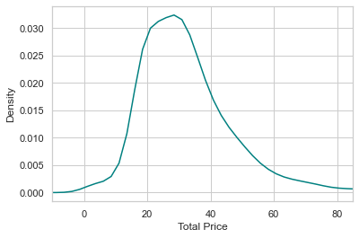
计算每个订单的平均价格¶
print("每个订单的平均价格为：", order_price["Total Price"].mean())
每个订单的平均价格为： 33.371106373428844
年度销售额曲线¶
grouper = pd.Grouper(key="Order Date", freq="Y")
Year_Total_Price = data.groupby(grouper).sum().reset_index()
plt.figure(figsize=(10, 6))
plt.plot(Year_Total_Price["Order Date"],
Year_Total_Price["Total Price"],
label="Year_TotalPrice_Curve")
plt.xlabel("Year")
plt.ylabel("Total Price")
plt.legend()
plt.show()
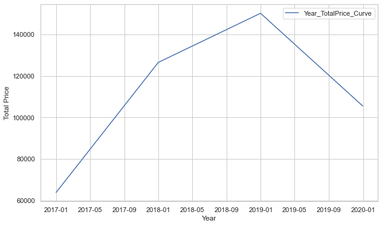
可见销售额在2016-2019年都是稳步增长，但在2019年末下降。
对比销量前五的产品在不同年的销量¶
condition = data["Item Name"].value_counts()[:5].index
df = data[data["Item Name"].apply(lambda x: x in condition)]
df["Order Date"] = df["Order Date"].dt.year
sns.countplot(data=df, x="Item Name", hue="Order Date")
plt.show()
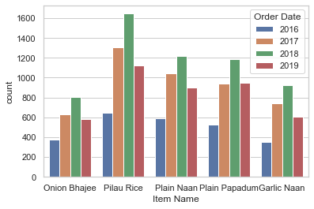
可以看出销量基本上在2018年达到了巅峰。Pilau Rice的销量一直最高，这也看出来了吃饭主食是必需品
自定义可视化¶
def show_data_by_condition(df: pd.DataFrame, title: str, colname: str="Total Price", method: str="sum"):
"""[summary]
Args:
df ([type]): [dataframe]
title (str): [the title of graph]
colname (str, optional): [the column name]. Defaults to "Total Price".
method (str, optional): [the function]. Defaults to "sum".
"""
def transform(df: pd.DataFrame):
return df.groupby("Order Date")[colname].agg(method)
res = df.groupby("Item Name").apply(transform)
width = 0.1
plt.figure(figsize=(14, 7))
for index, column_name in enumerate(res):
plt.bar(np.arange((len(res.index))) + index * width,
res[column_name],
width=width,
label=str(column_name) + " " + colname + " change")
plt.xticks(
np.arange((len(res.index))) + (width * (len(res.columns) - 1)) / 2,
res.index)
plt.title(title)
plt.xlabel("Year")
plt.ylabel(title)
plt.legend()
plt.show()
# 对比Total Price的变化
show_data_by_condition(df, "Total Price")
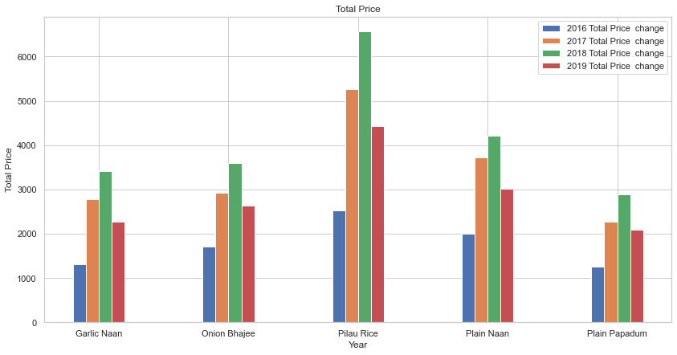
# 总卖出去的产品总数的变化
show_data_by_condition(df,
"Total Products",
colname="Total products",
method="sum")
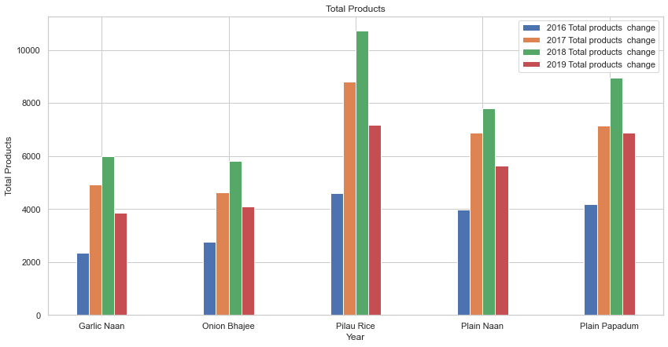
顾客一般都在什么时候下单？¶
counts = order_price["Order Date"].dt.hour.value_counts()[:5]
plt.bar(counts.index, counts)
plt.xlabel("Time")
plt.ylabel("Counts")
plt.show()
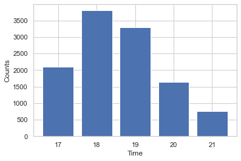
order_price["Order Date"].dt.hour.mean() # 下单时间的平均值
18.156343506882106
可见顾客一般都是在下午六点左右下单，说明这家饭店一定不是一个早餐店。
plt.pie(x=counts, labels=counts.index, shadow=True)
plt.show()
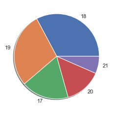
用饼图可以看的更加直观
下单的总价和时间有没有关系？¶
temp_order_data = order_price.copy()
temp_order_data["Order Date"] = order_price["Order Date"].dt.hour
plt.scatter(temp_order_data["Order Date"][:50], temp_order_data["Total Price"][:50],s= temp_order_data["Total Price"][:50]*50, alpha=0.5, c="red")
plt.xlabel("Time")
plt.ylabel("Total Price")
plt.show()
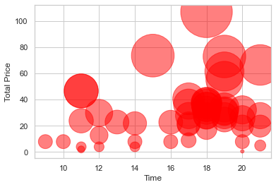
可见订单总价与下单时间没有太大关系，基本上吃饭花的钱都是差不多的
前五数量的产品的总产量¶
Ttpro = df.groupby("Item Name")["Total products"].sum()
Ttcout = df["Item Name"].value_counts()
plt.barh(y=Ttpro.index, width=Ttpro)
plt.show()
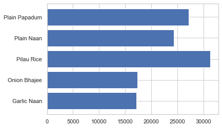
果然卖的越多总产量越多
看看产品数量和总价格有无关系¶
sns.regplot(data=order_price, x="Quantity", y="Total Price")
plt.show()
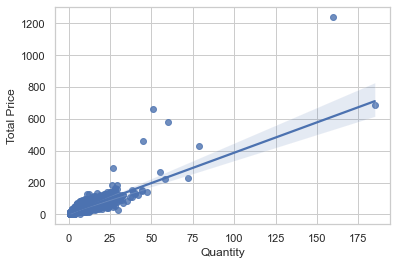
可以看到产品价格与总价格呈现线性关系，等会可以做简单的预测
简单的预测¶
线性回归模型预测¶
from sklearn.model_selection import train_test_split, learning_curve
from sklearn.linear_model import LinearRegression
X = order_price["Quantity"].tolist()
X = np.array(X).reshape(-1, 1)
y = order_price["Total Price"]
X_train, X_test, y_train, y_test = train_test_split(X,
y,
test_size=0.3,
random_state=0)
model = LinearRegression()
model = model.fit(X_train, y_train)
model.score(X_test, y_test)
0.6430517673102916
可见准确度有0.6，还是不错的
绘制学习曲线¶
train_sizes, train_loss, test_loss = learning_curve(
LinearRegression(), X, y, train_sizes=[0.1, 0.25, 0.5, 0.75, 1])
train_mean = np.mean(train_loss, axis=1)
test_mean = np.mean(test_loss, axis=1)
plt.plot(train_sizes, train_mean, label="Training")
plt.plot(train_sizes, test_mean, label="Cross-validation")
plt.xlabel("Training sizes")
plt.ylabel("score")
plt.legend()
plt.show()
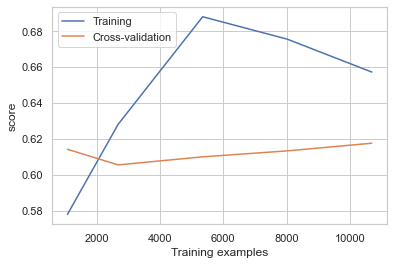
可能是数据量太小的原因，效果不太理想